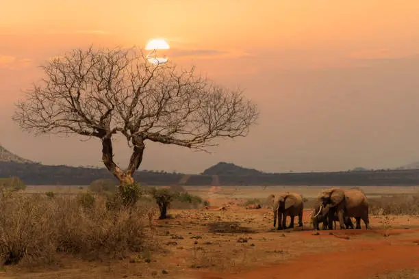

Photo Gallery



Discover Kenya's legendary wilderness, home to red elephants, lions, and endless savannah landscapes.
Tsavo East National Park is one of Kenya's oldest and largest national parks, covering vast stretches of untamed wilderness in southeastern Kenya. The park is renowned for its open plains, dramatic landscapes, and exceptional wildlife viewing opportunities.
It is especially famous for its iconic red elephants, which coat themselves with the region's red volcanic soil. Visitors can also encounter lions, leopards, cheetahs, buffaloes, giraffes, zebras, and numerous antelope species.
The scenic Galana River and the spectacular Lugard Falls provide breathtaking natural attractions, making Tsavo East one of Kenya's most memorable safari destinations.
Witness Tsavo's famous elephants covered in red volcanic dust.
Explore the life-giving river that attracts abundant wildlife.
Visit the spectacular rapids and rock formations along the river.

Experience one of Africa's greatest wilderness adventures with Eagle Pam Expeditions.
Plan Your Safari